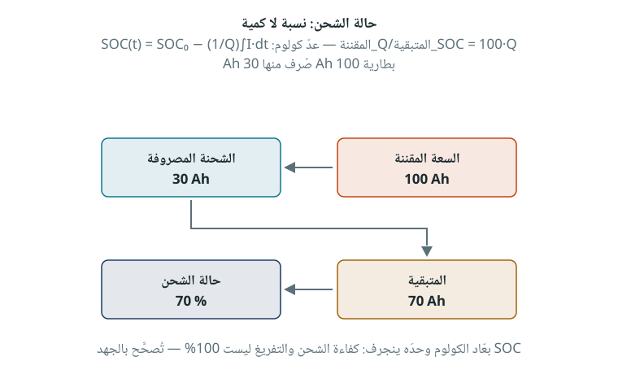

حالة شحن البطارية
Battery state of charge
حالة الشحن SOC هي نسبة الشحنة المتبقية في البطارية إلى سعتها الكاملة، وتُعبَّر عنها بنسبة مئوية: SOC = Q_remaining/Q_rated × 100. وهي ليست كمية مقيسة مباشرة بل تُقدَّر بدمج التيار أو بالجهد أو بممانعة داخلية. ودقتها تحدّ من أداء أنظمة إدارة البطارية.
لا يمكن قياس الشحنة المتبقية في البطارية مباشرة كما تُقاس كتلة أو حرارة. ولهذا تُقدَّر SOC بثلاث طرق: عدّ كولوم بدمج التيار على الزمن، أو ربط الجهد بحالة الشحن عبر منحنى معايرة، أو قياس الممانعة الداخلية. وكل طريقة لها عيوب: عدّ كولوم يتراكم فيه الخطأ، والجهد يتأثر بالحرارة والتيار، والممانعة تتأثر بالعمر. مثال: بطارية سعتها 100 Ah صُرف منها 30 Ah لها SOC = 70%. ولو كان تيار التفريغ 10 A لمدة 3 ساعات فالشحنة المصروفة 30 Ah.
كيف تعمل الظاهرة؟
البطارية تخزّن الطاقة كيميائياً في أقطابها، وعند التفريغ تنتقل أيونات الليثيوم من القطب السالب إلى الموجب عبر الإلكتروليت، وتنتقل الإلكترونات في الدائرة الخارجية. وكمية الأيونات القابلة للانتقال تحدد الشحنة المتبقية. ولهذا لا يمكن قياسها مباشرة من الخارج، بل تُستنتج من التيار المار أو من الجهد الذي يعتمد على تركيز الأيونات. وكلما تقدم العمر قلّ عدد الأيونات القابلة للانتقال، فتنقص السعة الفعلية لا حالة الشحن.
العلاقة بالأرقام
SOC = 100·Q_remaining/Q_rated، وQ = ∫I·dt. مثال: بطارية 100 Ah تُفرَّغ بتيار 10 A لمدة 3 ساعات: Q = 30 Ah، فـSOC = 70%. وطاقة البطارية = SOC×Q_rated×V_nominal = 0.70×100×3.7 = 259 Wh. ولو كانت كفاءة كولوم 98% لكانت الشحنة المسحوبة من السعة الفعلية 30/0.98 = 30.6 Ah.
مفاهيم متقاربة
يُفرَّق بين SOC وSOH: الأول نسبة الشحنة الحالية والثاني نسبة السعة المتبقية من الأصلية. ويُفرَّق بين SOC والجهد: الأول كمية شحنة والثاني جهد يعتمد على ظروف التشغيل. ويُفرَّق بين SOC والسعة: الأولى نسبة والثانية كمية Ah. وأخيراً يُفرَّد بين SOC المحسوب بعدّ كولوم وSOC المقيس بالمعايرة، حيث يتراكم خطأ الأول مع الزمن ويحتاج تصحيحاً دورياً.
حدود التطبيق
SOC لا تُقاس مباشرة، فكل تقدير يحمل خطأ يتراكم. ولا تصف البطاريات المتدهورة بلا تصحيح السعة الفعلية. ولا تصف البطاريات عند حرارة منخفضة حيث تنخفض السعة المتاحة. ولا تصف البطاريات ذات الكيمياء المتغيرة التي تتغير فيها منحنيات الجهد. وأخيراً لا تصف حالة الشحن في البطاريات المتصلة على التوالي بلا موازنة، حيث قد تختلف خلاياها.

| الكمية | القيمة | المصدر |
|---|---|---|
| سعة البطارية في المثال | 100 Ah | [1] |
| الشحنة المصروفة | 30 Ah | [1] |
| حالة الشحن الناتجة | 70 % | [1] |
المصادر
- 1 CODATA Value: Avogadro constant — NIST — CODATA 2022 recommended values (2024). physics.nist.gov/cgi-bin/cuu/Value?na · اطُّلع عليه 2026-11-22
- 2 CODATA Value: Planck constant — NIST — CODATA 2022 recommended values (2024). physics.nist.gov/cgi-bin/cuu/Value?h · اطُّلع عليه 2026-11-22
استشهد بهذا المصطلح
الصيغتان مبنيتان من بيانات الصفحة نفسها: العنوان والتاريخ ورابط النسخة المنشورة.
حالة شحن البطارية — Battery state of charge. (2026). ديوان المعرفة — انفراد. https://infiradev.com/diwan/terms/term-battery-state-of-charge.html
@misc{term-battery-state-of-charge2026,
title = {حالة شحن البطارية},
titleaddon = {Battery state of charge},
howpublished = {{ديوان المعرفة — انفراد} — مرجع علمي عربي},
year = {2026},
url = {https://infiradev.com/diwan/terms/term-battery-state-of-charge.html},
urldate = {2026-11-22},
note = {مراجعة علمية: تحرير انفراد الآلي — نُشر بأمر عبدالله الهويدي}
}
راجعه: تحرير انفراد الآلي — نُشر بأمر عبدالله الهويدي · 2026-11-22 · آخر تحديث 2026-11-22